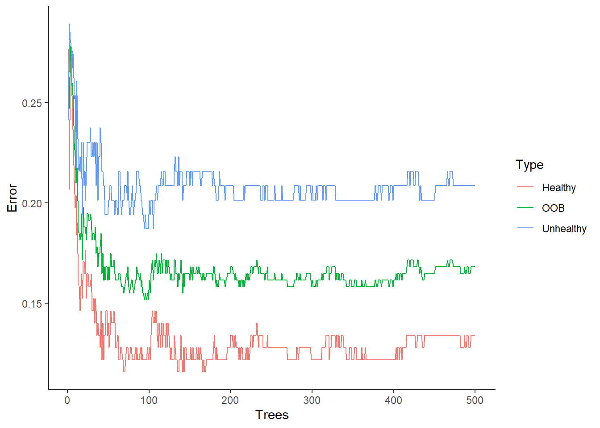
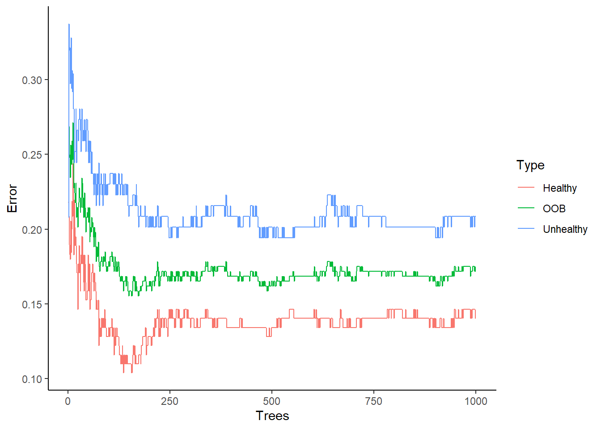
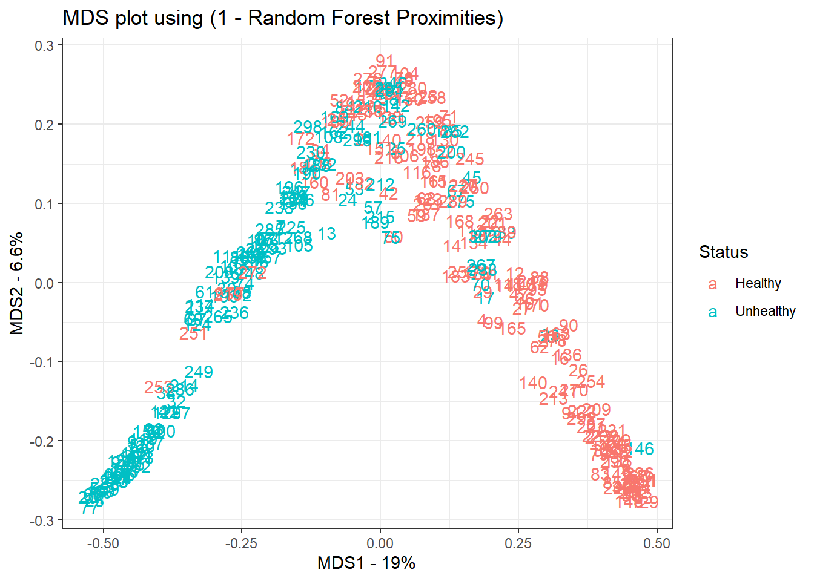

Chapter 12 Random Forests
Similar to Bagging since both are bootstrap-based procedure (based on committee of learning trees)
Different from Bagging because the trees are effectively decorrelated
- At each split in the tree-building process (for each bootstrap sample), we select the splitting rule from a randomly selected relatively small subset of the original input variables. Hence, different variables are used in the tree building process across the bootstrap sample. Thus, the trees are less dependent on each other (and dominant covariates), reducing the variance of the prediction
This variance reduction is beneficial because trees are inherently noisy, but if grown fairly deep, have relatively low bias. Hence, averaging many low-biased independently distributed trees together gives relatively unbiased and low variance predictions/classification.
The variance of an average of correlated variables is larger than the average of the same number of independent variables (i.e,, the effective degrees of freedom are less for correlated data)
Hence, an average of \(B\) identically distributed random variables, each with variance \(\sigma^2\) that have pairwise correlation \(\rho\) is
\[ \rho \sigma^2 + \sigma^2 \frac{1 - \rho}{B} \]
As \(B\) increases, there is still limiting variance \(\rho \sigma^2\)
If we reduce \(\rho\), then we could get a smaller variance for the average. Hence, random forests reduces the inherent dependence in Bagging
Intuitive steps:
- Create bootstrapped datasets (with replacement)
- Create a decision tree (1) using the bootstrapped dataset (2) using a random subset of variables at each step.
- Repeat step 1 and 2
- To make prediction, we run the data through all the created decision trees, and see the average, or majority vote (just like Bagging- using aggregated bootstrapped data )
Procedure
We randomly select a smaller number of input variables, \(m\), where \(m \le p\)
Typically, we use (rules of thumb, no scientific backing - simulation study):
\(m = \sqrt{p}\) for classification
\(m = \frac{p}{3}\) for regression
After \(B\) trees are grown, \(\{T(x, \Theta_b)\}^B_1\), the random forest regression predictor is
\[ \hat{f}^B_{rf} (x) = \frac{1}{B} \sum_{b=1}^B T(x; \Theta_b) \]
where \(\Theta_b\) is the cut points associated with the b-th tree
Algorithm for Random Forest (both regression and classification) (Hastie, Friedman, and Tibshirani 2001, Alg 15.1)
For \(b = 1\) to \(B\)
Draw a bootstrap sample \(\mathbf{Z}^*\) of size N from the training data
Grow a random-forest tree \(T_b\) to the bootstrapped data, by recursively repeating the following steps for each terminal node of the tree, until the minimum node size \(n_{min}\) is reached:
Select \(m\) variables at random from the \(p\) variables
Pick the best variable/split-point among the \(m\)
Split the node into two daughter nodes
Output the ensemble of trees \(\{T_b\}^B_1\)
To predict a new point \(x\)
Regression: \(\hat{f}_{rf}^B(x) = \frac{1}{B}\sum_{b=1}^B T_b(x)\)
Classification: Let \(\hat{C}_b (x)\) be the class prediction of the b-th random-forest tree. Then \(\hat{C}_{rf}^B (x) = \text{majority vote } \{\hat{C}_b (x) \}^B_{1}\)
In general, Gradient Boosting is comparable Random Forests and Random Forests is usually better than Bagging. But in practice, this isn’t always the case.
Best method is based on the type of structure in the process (e..g, degree of linearity/non-linearity, dependence in the covariates, relative importance of specific covariates, etc.)
To get out-of-bag (OOB) samples, for each observation pair \((x_i, y_i)\), its random forest predictor is the average of the trees corresponding to bootstrap samples in which this observation did not appear
OOB error (i.e., comparison between OOB prediction to the actual response) is effectively a cross-validation error estimate. Once this error stabilizes, then the model is trained.
Variable Importance
Since random forests typically include more variables (due to the random selection), it’s more likely to recognize additional “important” variables
Variable importance is determined by a measure of the important in the split-criterion fo reach variable as aggregated across each tree.
Variable importance can also be determined by the variable’s prediction strength (based on OOB prediction). When the b-th tree is grown, the OOB samples are passed down the tree and the prediction accuracy is taken. Then, the value for the j-th variable are randomly permuted in the OOB samples, and the accuracy is computed. The decrease in accuracy is averaged over all trees and gives a measure of importance for variable j.
- This does not measure the effect on prediction if this variable was not available because the refitted model would likely contain surrogate variables to take its place
Notes:
Proximity Plots: indicate which observations are effectively close together in terms of the random forest classifier (typically only provide info on where the points lie relative to the decision boundary)
Overfitting: Random forests can be robust to overfitting if the number of relevant variables in \(X\) is large relative to \(p\)
Bias: The bias in random forests is the same as the bias of the individual tree, with only improvement in MSE due to variance reduction
Similar to Nearest Neighbor Classifiers (e.g., k-nearest neighbor)
Packages:
randomForest,cforest,ParallelForest,ranger,RboristRandom Forests are good with general nonlinear nonparametric prediction
12.1 Application
Example by Josh Starmer
load package
library(ggplot2)
library(cowplot)
library(randomForest)NOTE: The data used in this demo comes from the UCI machine learning repository. http://archive.ics.uci.edu/ml/index.php Specifically, this is the heart disease data set. http://archive.ics.uci.edu/ml/datasets/Heart+Disease
url <- "http://archive.ics.uci.edu/ml/machine-learning-databases/heart-disease/processed.cleveland.data"
data <- read.csv(url, header=FALSE)Reformat the data so that it is 1) Easy to use (add nice column names) 2) Interpreted correctly by randomForest.
head(data) # you see data, but no column names## V1 V2 V3 V4 V5 V6 V7 V8 V9 V10 V11 V12 V13 V14
## 1 63 1 1 145 233 1 2 150 0 2.3 3 0.0 6.0 0
## 2 67 1 4 160 286 0 2 108 1 1.5 2 3.0 3.0 2
## 3 67 1 4 120 229 0 2 129 1 2.6 2 2.0 7.0 1
## 4 37 1 3 130 250 0 0 187 0 3.5 3 0.0 3.0 0
## 5 41 0 2 130 204 0 2 172 0 1.4 1 0.0 3.0 0
## 6 56 1 2 120 236 0 0 178 0 0.8 1 0.0 3.0 0colnames(data) <- c(
"age",
"sex",# 0 = female, 1 = male
"cp", # chest pain
# 1 = typical angina,
# 2 = atypical angina,
# 3 = non-anginal pain,
# 4 = asymptomatic
"trestbps", # resting blood pressure (in mm Hg)
"chol", # serum cholestoral in mg/dl
"fbs", # fasting blood sugar if less than 120 mg/dl, 1 = TRUE, 0 = FALSE
"restecg", # resting electrocardiographic results
# 1 = normal
# 2 = having ST-T wave abnormality
# 3 = showing probable or definite left ventricular hypertrophy
"thalach", # maximum heart rate achieved
"exang", # exercise induced angina, 1 = yes, 0 = no
"oldpeak", # ST depression induced by exercise relative to rest
"slope", # the slope of the peak exercise ST segment
# 1 = upsloping
# 2 = flat
# 3 = downsloping
"ca", # number of major vessels (0-3) colored by fluoroscopy
"thal", # this is short of thalium heart scan
# 3 = normal (no cold spots)
# 6 = fixed defect (cold spots during rest and exercise)
# 7 = reversible defect (when cold spots only appear during exercise)
"hd" # (the predicted attribute) - diagnosis of heart disease
# 0 if less than or equal to 50% diameter narrowing
# 1 if greater than 50% diameter narrowing
)
# head(data) # now we have data and column names
# str(data) # this shows that we need to tell R which columns contain factors
# it also shows us that there are some missing values. There are "?"s
# in the dataset.
## First, replace "?"s with NAs.
data[data == "?"] <- NA
## Now add factors for variables that are factors and clean up the factors
## that had missing data...
data[data$sex == 0,]$sex <- "F"
data[data$sex == 1,]$sex <- "M"
data$sex <- as.factor(data$sex)
data$cp <- as.factor(data$cp)
data$fbs <- as.factor(data$fbs)
data$restecg <- as.factor(data$restecg)
data$exang <- as.factor(data$exang)
data$slope <- as.factor(data$slope)
data$ca <- as.integer(data$ca) # since this column had "?"s in it (which
# we have since converted to NAs) R thinks that
# the levels for the factor are strings, but
# we know they are integers, so we'll first
# convert the strings to integers...
data$ca <- as.factor(data$ca) # ...then convert the integers to factor levels
data$thal <- as.integer(data$thal) # "thal" also had "?"s in it.
data$thal <- as.factor(data$thal)
## This next line replaces 0 and 1 with "Healthy" and "Unhealthy"
data$hd <- ifelse(test=data$hd == 0, yes="Healthy", no="Unhealthy")
data$hd <- as.factor(data$hd) # Now convert to a factor
str(data) ## this shows that the correct columns are factors and we've replaced## 'data.frame': 303 obs. of 14 variables:
## $ age : num 63 67 67 37 41 56 62 57 63 53 ...
## $ sex : Factor w/ 2 levels "F","M": 2 2 2 2 1 2 1 1 2 2 ...
## $ cp : Factor w/ 4 levels "1","2","3","4": 1 4 4 3 2 2 4 4 4 4 ...
## $ trestbps: num 145 160 120 130 130 120 140 120 130 140 ...
## $ chol : num 233 286 229 250 204 236 268 354 254 203 ...
## $ fbs : Factor w/ 2 levels "0","1": 2 1 1 1 1 1 1 1 1 2 ...
## $ restecg : Factor w/ 3 levels "0","1","2": 3 3 3 1 3 1 3 1 3 3 ...
## $ thalach : num 150 108 129 187 172 178 160 163 147 155 ...
## $ exang : Factor w/ 2 levels "0","1": 1 2 2 1 1 1 1 2 1 2 ...
## $ oldpeak : num 2.3 1.5 2.6 3.5 1.4 0.8 3.6 0.6 1.4 3.1 ...
## $ slope : Factor w/ 3 levels "1","2","3": 3 2 2 3 1 1 3 1 2 3 ...
## $ ca : Factor w/ 4 levels "0","1","2","3": 1 4 3 1 1 1 3 1 2 1 ...
## $ thal : Factor w/ 3 levels "3","6","7": 2 1 3 1 1 1 1 1 3 3 ...
## $ hd : Factor w/ 2 levels "Healthy","Unhealthy": 1 2 2 1 1 1 2 1 2 2 ... ## "?"s with NAs because "?" no longer appears in the list of factors
## for "ca" and "thal"Now we are ready to build a random forest.
NOTE: For most machine learning methods, you need to divide the data manually into a “training” set and a “test” set. This allows you to train the method using the training data, and then test it on data it was not originally trained on.
In contrast, Random Forests split the data into “training” and “test” sets for you. This is because Random Forests use bootstrapped data, and thus, not every sample is used to build every tree. The “training” dataset is the bootstrapped data and the “test” dataset is the remaining samples. The remaining samples are called the “Out-Of-Bag” (OOB) data.
set.seed(42)
## impute any missing values in the training set using proximities
data.imputed <- rfImpute(hd ~ ., data = data, iter=6)## ntree OOB 1 2
## 300: 17.49% 12.80% 23.02%
## ntree OOB 1 2
## 300: 16.83% 14.02% 20.14%
## ntree OOB 1 2
## 300: 17.82% 13.41% 23.02%
## ntree OOB 1 2
## 300: 17.49% 14.02% 21.58%
## ntree OOB 1 2
## 300: 17.16% 12.80% 22.30%
## ntree OOB 1 2
## 300: 18.15% 14.63% 22.30%## NOTE: iter = the number of iterations to run. Breiman says 4 to 6 iterations
## is usually good enough. With this dataset, when we set iter=6, OOB-error
## bounces around between 17% and 18%. When we set iter=20,
# set.seed(42)
# data.imputed <- rfImpute(hd ~ ., data = data, iter=20)
## we get values a little better and a little worse, so doing more
## iterations doesn't improve the situation.
##
## NOTE: If you really want to micromanage how rfImpute(),
## you can change the number of trees it makes (the default is 300) and the
## number of variables that it will consider at each step.
## Now we are ready to build a random forest.
## NOTE: If the thing we're trying to predict (in this case it is
## whether or not someone has heart disease) is a continuous number
## (i.e. "weight" or "height"), then by default, randomForest() will set
## "mtry", the number of variables to consider at each step,
## to the total number of variables divided by 3 (rounded down), or to 1
## (if the division results in a value less than 1).
## If the thing we're trying to predict is a "factor" (i.e. either "yes/no"
## or "ranked"), then randomForest() will set mtry to
## the square root of the number of variables (rounded down to the next
## integer value).
## In this example, "hd", the thing we are trying to predict, is a factor and
## there are 13 variables. So by default, randomForest() will set
## mtry = sqrt(13) = 3.6 rounded down = 3
## Also, by default random forest generates 500 trees (NOTE: rfImpute() only
## generates 300 tress by default)
model <- randomForest(hd ~ ., data=data.imputed, proximity=TRUE)
## RandomForest returns all kinds of things
model # gives us an overview of the call, along with...##
## Call:
## randomForest(formula = hd ~ ., data = data.imputed, proximity = TRUE)
## Type of random forest: classification
## Number of trees: 500
## No. of variables tried at each split: 3
##
## OOB estimate of error rate: 16.83%
## Confusion matrix:
## Healthy Unhealthy class.error
## Healthy 142 22 0.1341463
## Unhealthy 29 110 0.2086331 # 1) The OOB error rate for the forest with ntree trees.
# In this case ntree=500 by default
# 2) The confusion matrix for the forest with ntree trees.
# The confusion matrix is laid out like this: Healthy Unhealthy
--------------------------------------------------------------Healthy | Number of healthy people | Number of healthy people | | correctly called “healthy” | incorrectly called “unhealthy” | | by the forest. | by the forest | ————————————————————– Unhealthy| Number of unhealthy people | Number of unhealthy people | | incorrectly called | correctly called “unhealthy” | | “healthy” by the forest | by the forest | ————————————————————–
## Now check to see if the random forest is actually big enough...
## Up to a point, the more trees in the forest, the better. You can tell when
## you've made enough when the OOB no longer improves.
oob.error.data <- data.frame(
Trees=rep(1:nrow(model$err.rate), times=3),
Type=rep(c("OOB", "Healthy", "Unhealthy"), each=nrow(model$err.rate)),
Error=c(model$err.rate[,"OOB"],
model$err.rate[,"Healthy"],
model$err.rate[,"Unhealthy"]))
ggplot(data=oob.error.data, aes(x=Trees, y=Error)) +
geom_line(aes(color=Type))
# ggsave("oob_error_rate_500_trees.pdf")
## Blue line = The error rate specifically for calling "Unheathly" patients that
## are OOB.
##
## Green line = The overall OOB error rate.
##
## Red line = The error rate specifically for calling "Healthy" patients
## that are OOB.
## NOTE: After building a random forest with 500 tress, the graph does not make
## it clear that the OOB-error has settled on a value or, if we added more
## trees, it would continue to decrease.
## So we do the whole thing again, but this time add more trees.
model <- randomForest(hd ~ ., data=data.imputed, ntree=1000, proximity=TRUE)
model##
## Call:
## randomForest(formula = hd ~ ., data = data.imputed, ntree = 1000, proximity = TRUE)
## Type of random forest: classification
## Number of trees: 1000
## No. of variables tried at each split: 3
##
## OOB estimate of error rate: 17.16%
## Confusion matrix:
## Healthy Unhealthy class.error
## Healthy 141 23 0.1402439
## Unhealthy 29 110 0.2086331oob.error.data <- data.frame(
Trees=rep(1:nrow(model$err.rate), times=3),
Type=rep(c("OOB", "Healthy", "Unhealthy"), each=nrow(model$err.rate)),
Error=c(model$err.rate[,"OOB"],
model$err.rate[,"Healthy"],
model$err.rate[,"Unhealthy"]))
ggplot(data=oob.error.data, aes(x=Trees, y=Error)) +
geom_line(aes(color=Type))
# ggsave("oob_error_rate_1000_trees.pdf")
## After building a random forest with 1,000 trees, we get the same OOB-error
## 16.5% and we can see convergence in the graph. So we could have gotten
## away with only 500 trees, but we wouldn't have been sure that number
## was enough.
## If we want to compare this random forest to others with different values for
## mtry (to control how many variables are considered at each step)...
oob.values <- vector(length=10)
for(i in 1:10) {
temp.model <- randomForest(hd ~ ., data=data.imputed, mtry=i, ntree=1000)
oob.values[i] <- temp.model$err.rate[nrow(temp.model$err.rate),1]
}
oob.values## [1] 0.1749175 0.1782178 0.1716172 0.1782178 0.1683168 0.1881188 0.1815182
## [8] 0.1980198 0.1782178 0.1848185## find the minimum error
min(oob.values)## [1] 0.1683168## find the optimal value for mtry...
which(oob.values == min(oob.values))## [1] 5## create a model for proximities using the best value for mtry
model <- randomForest(hd ~ .,
data=data.imputed,
ntree=1000,
proximity=TRUE,
mtry=which(oob.values == min(oob.values)))
## Now let's create an MDS-plot to show how the samples are related to each
## other.
##
## Start by converting the proximity matrix into a distance matrix.
distance.matrix <- as.dist(1-model$proximity)
mds.stuff <- cmdscale(distance.matrix, eig=TRUE, x.ret=TRUE)
## calculate the percentage of variation that each MDS axis accounts for...
mds.var.per <- round(mds.stuff$eig/sum(mds.stuff$eig)*100, 1)
## now make a fancy looking plot that shows the MDS axes and the variation:
mds.values <- mds.stuff$points
mds.data <- data.frame(Sample=rownames(mds.values),
X=mds.values[,1],
Y=mds.values[,2],
Status=data.imputed$hd)
ggplot(data=mds.data, aes(x=X, y=Y, label=Sample)) +
geom_text(aes(color=Status)) +
theme_bw() +
xlab(paste("MDS1 - ", mds.var.per[1], "%", sep="")) +
ylab(paste("MDS2 - ", mds.var.per[2], "%", sep="")) +
ggtitle("MDS plot using (1 - Random Forest Proximities)")
# ggsave(file="random_forest_mds_plot.pdf")